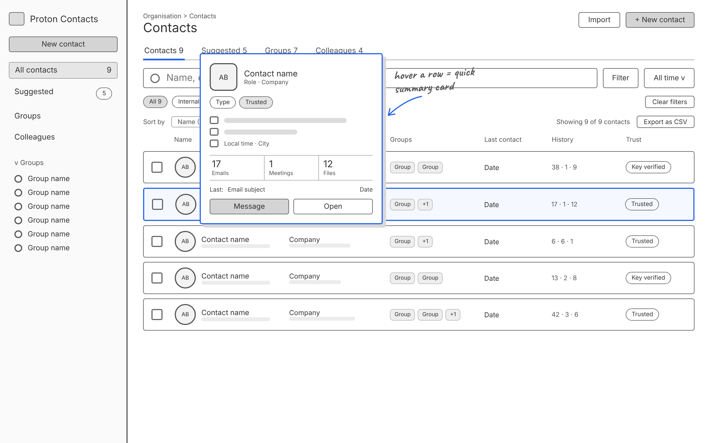
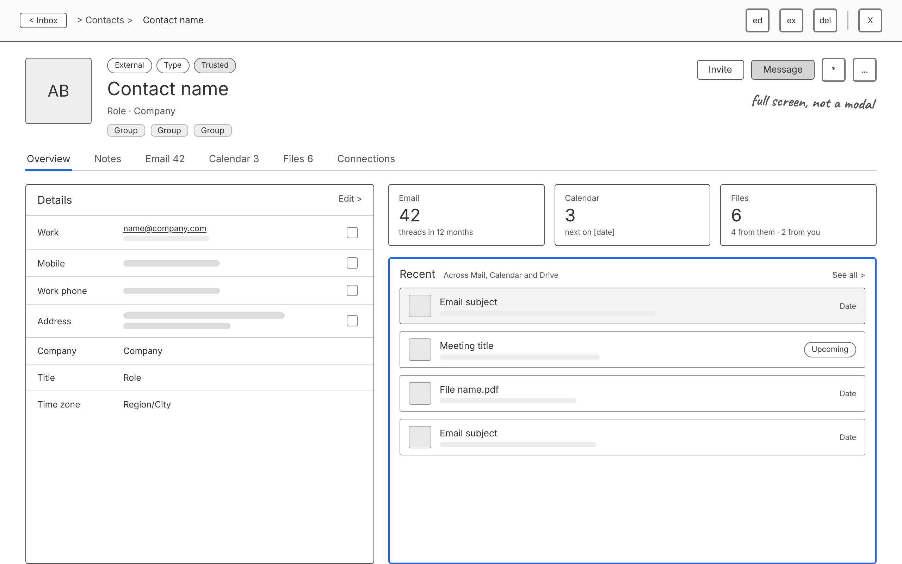
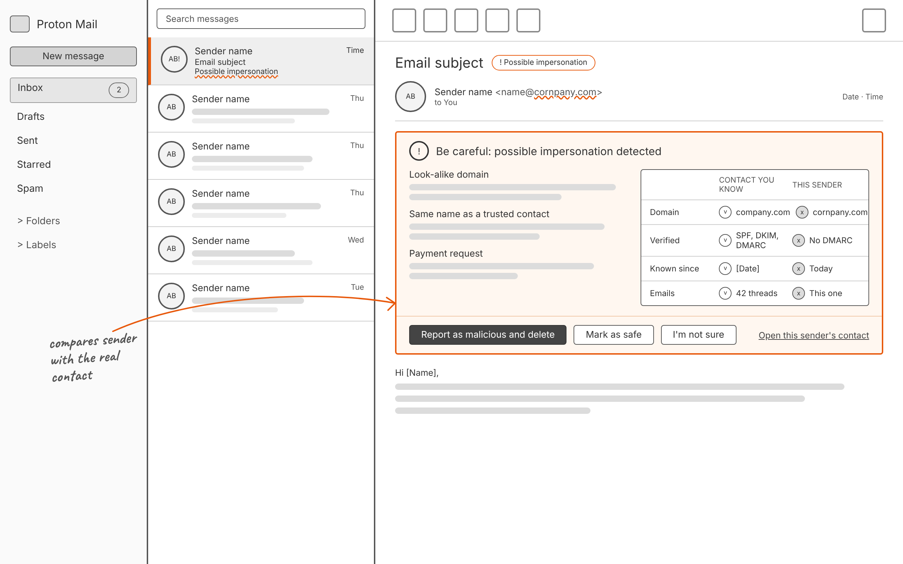
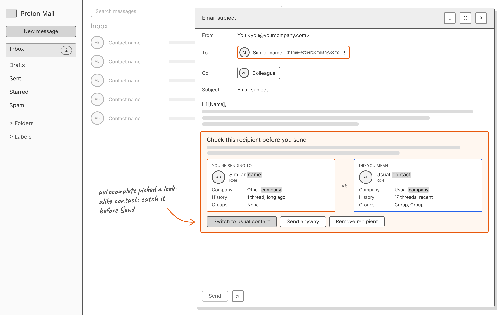

Wireframes
Rough low-fidelity wireframes for Trusted Contacts and Protection, drawn before the Proton-styled mockups. Placeholder names and lines stand in for real content.

01 / Contacts overview
The contacts list with tabs for Suggested, Groups and Colleagues, internal and external filters, history counts and a trust badge on every row. Hovering a row opens a quick summary card.

02 / Contact card
A contact opens full screen, not as a modal. Details sit on the left; history counts and recent activity across Mail, Calendar and Drive sit on the right.

03 / Protection: impersonation
Inbound. A look-alike sender is flagged in the inbox and the open email. The warning compares the sender with the real contact on domain, authentication, how long they have been known and email history.

04 / Protection: misdirection
Outbound. Autocomplete picked a look-alike contact, so the composer asks you to check the recipient before Send and shows who you probably meant.